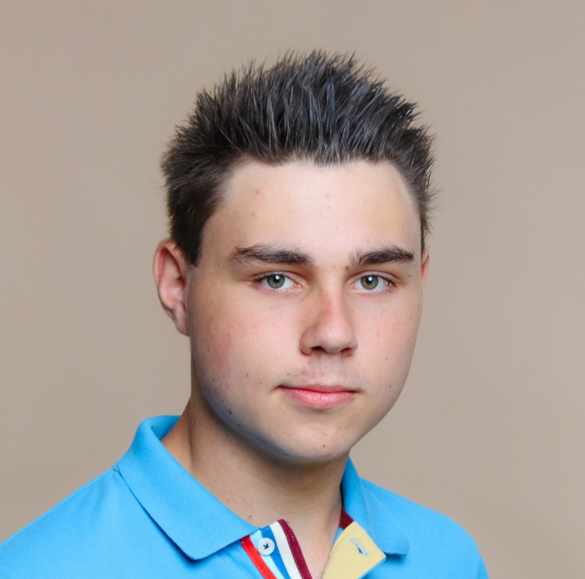

Ich bin Maximilian Morrell und besuche derzeit die DigBiz (IT) HAK Kitzbühel. Da ich mich schon immer für Computer, Medien und Wirtschaft interessiere bietet mir die Handelsakademie in Kitzbühel eine optimale Ausbildung. Zu den wichtigsten Fähigkeiten, welche ich in der Schule gelernt habe gelten:
Während meiner Schulzeit konnte ich bereits vielfältige berufliche Erfahrungen sammeln:
Neben der Schule probiere ich viel selbst aus – zum Beispiel als Fotograf, wenn ich auf Reisen die Landschaft festhalte, oder als Programmierer, wo ich eigene Projekte umsetze.
Am meisten begeistert mich die kommerzielle Luftfahrt, da sie Wirtschaft, Technik und komplexe Abläufe miteinander verbindet – genau die Themen, die mich besonders interessieren.
Seit 2025 engagiere ich mich ehrenamtlich bei Amnesty International im Projekt ‚Menschenrechtsbilder‘ für die Sekundarstufen I & II, wo ich interaktive Vorträge halte und die Schülerinnen und Schüler aktiv in die Diskussion über Menschenrechte einbeziehe